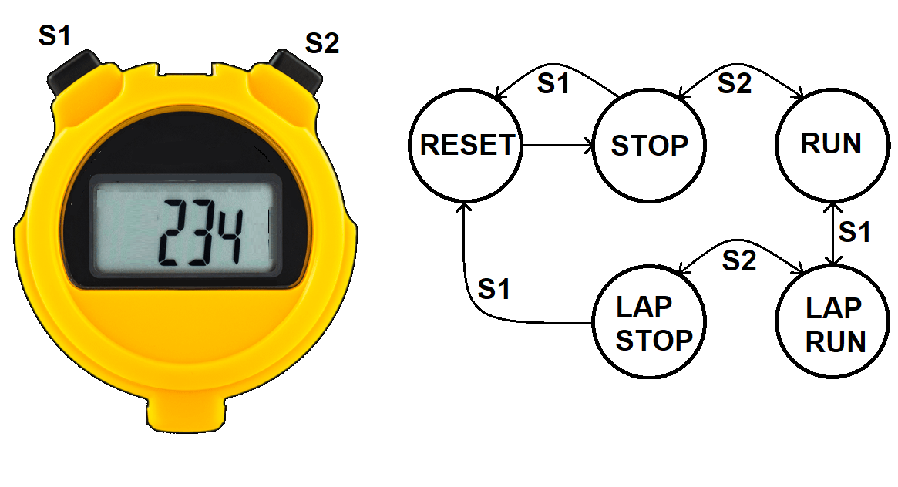
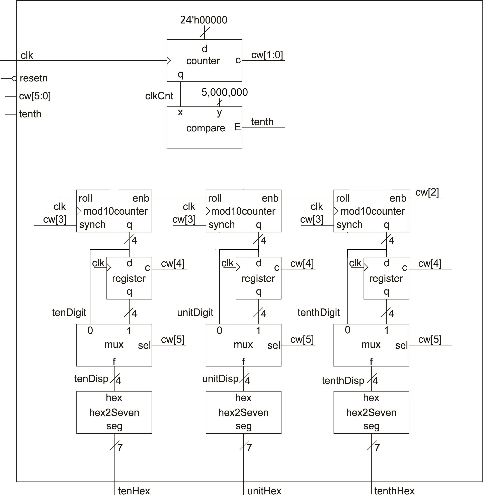
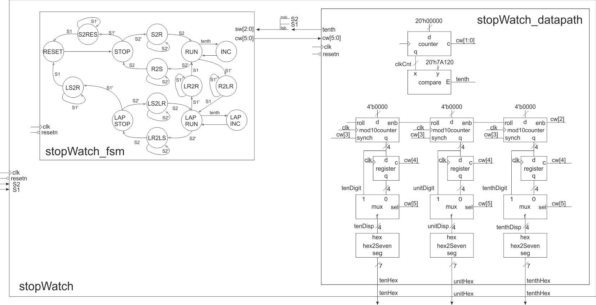

| Lecture | 17 |
| Code |
stopWatch.vhd stopWatch_datapath.vhd stopWatch_package.vhd |
| Handout |
stopWatchDp&Cu.pdf |
| Class Objectives | Understand how to construct a datapath and its control word and then use this control word to write the microcode to program the datapath using the control unit. |
The Stopwatch
As a light review, the stopwatch that we are building has two pushers and a display.
The stopwatch has three digits, and displays time to within a tenth of a second. Hence, the stopwatch times events from 0.0 seconds up to 59.9 seconds. The state diagram shown above illustrates how the pushers control the operation of the stopwatch. For more details what these state names mean, please refer to the previous lecture.
The Stopwatch Datapth
The stopwatch datapath performs all the actions needed to keep track of time on a two pusher stopwatch covered in the previous lecture. The datapath has two main components, a clock divider and a display unit.
The Clock Divider takes the 50MHz oscillator signal and creates a 10Hz signal, tenth, using the counter/comparator combination at the top of the schematic. The counter counts up at a rate of 50,000,000 counts per second starting from 0. In exactly 1/10th of a second, the counter will reach 5,000,000. Note that 5,000,000 is equal to hex 0x7A120. When the counter reaches 0x7A120, the comparator's E output, called tenth, will equal 1. The name tenth is a reference to how often the tenth signal will equal 1, a tenth of a second.
The rest of the hardware in the datapath is used to keep track of how many tenths of a second have gone by and display them through a hex to seven segment converter. The register is used to buffer the mod10counters when the stopwatch is in lap mode.
The Whole Enchilada
When combined into a single circuit, the design gets a lot more complex and, at the same time, will make a lot more sense.
The relationship between the states in the FSM and the hardware in the datapath is established by the control word. The control word is a listing of every control signal in the datapath. Each state in the FSM must assert a control word that directs the datapath to perform the actions needed in that state. The control word table, shown below, is a table formed with columns that are the control word bits and rows that are the states in the FSM. Your job is to program the hardware by determining the control word for each state.
To make the hardware design engineers job easier, you, I've included the actions of the hardware units beneath the control word bits. You should do this in your designs. You job is to fill in the table below. My answers are included in the HTML source code. View by right clicking and selecting View Page Source, or whatever the equivalent is for your browser.
| cw[5] | cw[4] | cw[3] | cw[2] | cw[1:0] |
| 2x1 mux | lap reg | mod10 reset | mod10 count | timer |
| 0 = mod10 | 1 = load | 1 = reset | 1 = count up | 11 = load |
| 1 = register | 0 = hold | 0 = hold | 0 = hold | 10 = count up |
| 01 = not used | ||||
| 00 = hold | ||||
| RESET | ||||
| STOP | ||||
| S2RES | ||||
| S2R | ||||
| RUN | ||||
| R2LR | ||||
| R2S | ||||
| INC | ||||
| LAPRUN | ||||
| LR2R | ||||
| LR2LS | ||||
| LAPINC | ||||
| LAPSTOP | ||||
| LS2R | ||||
| LS2LR |
Optional - Formal Design Process
Building digital systems using the datapath and control approach is a three- step process.- Write an algorithmic description for the solution to the problem.
- Parse the algorithmic description into datapath building blocks and control states.
- Define the MIEs and OEs for the control unit.
The programming language used to formalize an algorithmic solution to design problem is a derivative of the popular C-programming language referred to as mini-C. The mini-C programming language contains four types of statements.
- IF
- if (condition) then BODY_1 else BODY_2
- FOR
- for (i=A; i
- WHILE
- while(condition) BODY
- ASSIGNMENT
- X = value
In digital circuit design, the variable types in the mini-C language are limited to be either binary or 2's-complement integers. Arrays of these types are common. Limiting the discussion to integer types is not an inherent limitation of the mini-C language, rather it limits the discussion to the essential points of the design process. Complex types like floating-point numbers can be accommodated if the necessary representations and hardware are developed.
No effort is made to explain the process of transforming a word statement into an algorithm; the process should be a familiar task from writing programs. Rather, consideration of the transformation of the algorithm into hardware is presented.
From an algorithmic statement, its conversion into hardware is desired. The conversion is accomplished by parsing the algorithm. In computer science, parsing is the process of analyzing a program for its structure. Here, parsing means analyzing a program line-by-line, sequentially, from the first line to the last line, to determine its hardware structure. The analysis process takes a line of code, a mini-C statement, and transforms it into some additional building blocks in the datapath and some additional states in the control unit. When the parsing is complete, the datapath has all the functionality present in the algorithm, and the control unit has all the control structures present in the algorithm.
IF
When an if/then/else statement is encountered in a program, BODY_1 is executed when the condition is true. If condition is false, then BODY_2 is executed. BODY_1 and BODY_2 contain 0 or more statements. Typically, the datapath computes the condition using a comparator. In such a case, the datapath requires a comparator, the output of which is the status signal shown in the following figure.While the control unit is in state IfThen, the condition is being evaluated, the status signal is being communicated to the control unit, and the control unit is deciding whether to transition to either the BODY1 or BODY2 states. When the clock edge arrives, the control unit will transition to its next state. The BODY1 or BODY2 states contain the entire collection of states derived by parsing all the statements in their respective bodies. Regardless of which path the control unit takes, both threads return to the Next state, which is the next statement after the if/then/else statement in the algorithm.

FOR
When a for loop is encountered in a program, BODY is executed B-A times and the value of i is available for use inside BODY. BODY contains zero or more statements. A for statement requires a counter and a comparator arranged as shown in the following figure. The initial value of the for loop is the data input to the counter. The output of the counter is the i variable of the for loop. The i variable is compared to the terminal value of the for loop. The status of this comparison is passed to the control unit so that the control unit knows to terminate the for loop when the counter has reached its terminal value.The control unit sequences the actions of the hardware in the datapath. The execution of the for loop begins with an initialization of the counter in the Init state. In this state, the control unit asserts a load signal on the control lines to the counter causing the counter to be initialized to A. On the next clock edge, the counter loads A and the control unit transitions to the Comp state. In this state, the control unit does nothing, giving the comparator time to determine the relative magnitude of i and B, and to assert its L output to the control unit in the form of a status signal. The control unit uses the status signal to either execute the body of the for loop, or to exit the for loop and proceed with the next instruction after the for loop. The Body state represents the collection of states derived by parsing all the statements in the body of the for loop. At the end of the for loop's body, the control unit enters the Inc state where the control unit asserts an increment signal on the control lines to the counter. This assertion causes the counter to count up on the next edge which also causes the control unit to transition back to the Comp state.

WHILE
When a while loop is encountered in a program, Body is executed while the condition is true. Typically, the datapath computes the condition using a comparator, the output of which is the status signal shown in the following figure. While the control unit is in state Comp, the condition is being evaluated, the status signal is being communicated to the control unit, and the control unit deciding on whether to transition to either the Body or Next states. The Body state represents the collection of states derived by parsing all the statements in the body of the while loop.In some cases the status signal may be determined by some external source. Then, the status line shown in the following figure.as emanating from the datapath would in fact be sent in from the external world as shown in the following figure.

ASSIGNMENT
When an assignment statement is encountered in a program, X is assigned a new value. This statement is realized by placing a register in the datapath whose input is the value on the right-hand side of the assignment statement. In order to make the assignment, the control unit enters the Op state, where it asserts a load signal on the registers control input. On the next positive edge of the clock, the register loads its value and the control unit moves on to the Next state. The size of the register storing X is determined by the range of values required to be stored in X. In some cases, this size is defined by the word statement; in other cases, the designer must make a judgment call on a reasonable value range.Statements like X = X+Y often occur in algorithms. In cases when a variable appears on both the left-hand and right-hand side of an assignment statement, feedback must be employed as shown in the following figure. In this case, the output from the X register is added to Y, the output of the summation is sent to the data input of the X register. The control unit asserts a load signal on the X register's control input when it is in the Op state. Most likely, the control unit would assert a hold signal on the Y register's control input while it was in the Op state.
What prevents the X register from rapidly adding Y to itself multiple times? The answer is that the X register will only latch X+Y on the positive edge of the clock. So X+Y cannot "get into" the X register until the positive clock edge.

A variable often appears on the left-hand side (LHS) of two or more assignment statements. For example, consider a algorithmic description which contains the statements X=Y and X=Z. In this case, the variable X appears on the LHS of two assignments. Since the variable X is stored in a register which has a single input, a problem occurs because there are two different sources for the input. This conflict is resolved by inserting a mux between the two data sources and the single data input of the X register as shown in the figure above. The control unit aids in resolving this conflict by asserting control1 to route the correct value to the data input of register X when the control unit asserts a load signal on the control2 line.
Control Word
After the algorithm is parsed, the design of the datapath is complete and the architecture of the control unit is complete. The details of the control unit, its FSM remain to be defined. The MIE logic in the FSM is describe by the states and transitions in the state diagram produced during parsing. The final step in the design comes from the definition of the control word for each state. A control word is a complete listing of the names and meanings of all the control signals sent from the control unit to the datapath.Chapters 4 and 6 introduced a variety of basic building blocks with a variety of inputs and outputs. The following table summarizes all inputs and outputs from these basic building blocks.

The control word is defined by listing the control inputs and their effects for every basic building block in the datapath. The control word defines the language of the datapath; any task performed by the datapath must be expressed using this collection of bits. The list of control inputs forms the header of the control word table, the table which contains the control word for every state. The rows of the control word table are labeled with all the state names used in the control unit. Then, the actions each state needs to perform in the datapath are translated into the language defined by the control word.